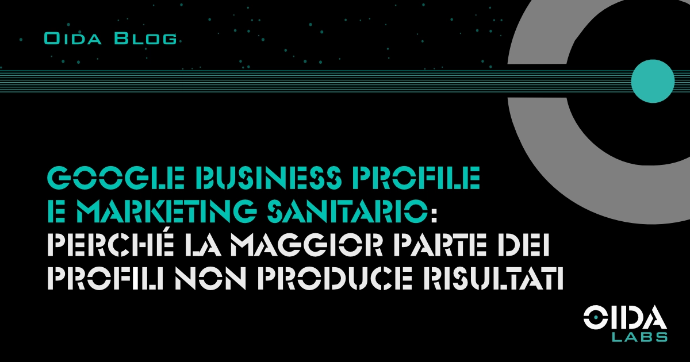

← Tutti gli articoliGoogle Business Profile e marketing sanitario: perché la maggior parte dei profili non produce risultati
Nel marketing sanitario il Google Business Profile è spesso compilato ma raramente performante. Le ragioni strutturali che separano un profilo presente da uno che genera pazienti.
Nel marketing sanitario il Google Business Profile è uno degli strumenti più esposti al paradosso della compilazione: quasi tutte le strutture lo hanno, pochissime lo vedono effettivamente funzionare. La distanza tra le due condizioni non dipende dal numero di campi compilati, ma dalla logica con cui il profilo viene integrato nel sistema di acquisizione pazienti.
- Il profilo è presente, ma non lavora
- Cosa Google valuta realmente nella ricerca sanitaria
- Le recensioni come sistema, non come numero
- Perché la manutenzione è la variabile che definisce il risultato
- FAQ
Il profilo è presente, ma non lavora
Secondo BrightLocal, nel 2024 il 46% dei pazienti consulta Google Maps prima di scegliere dove prenotare una visita specialistica. Il profilo che compare in quella fase iniziale orienta la decisione quanto, se non più, della presentazione del sito web. Dall’analisi condotta da OIDA Labs su profili sanitari italiani, il 60% delle strutture presenta un grado di compilazione intorno al 40% del potenziale reale del profilo.
Il dato in sé dice poco se non viene letto insieme al suo correlato operativo: i profili “sotto il 50% di potenziale” non sono quelli con campi vuoti. Sono quelli in cui i campi compilati lo sono in modo generico, statico, incoerente con il modo in cui i pazienti effettivamente cercano la struttura. Un profilo che dichiara “clinica” invece di specificare le specialità erogate, che mostra fotografie datate di tre anni fa, che non ha mai risposto a una recensione negativa, è un profilo presente e non performante.
La differenza tra un profilo che compare nella map pack locale — le prime tre strutture mostrate in mappa — e uno che non compare non è quantitativa. È strutturale. E questo è il punto che la maggior parte delle strutture non governa.
Cosa Google valuta realmente nella ricerca sanitaria
L’algoritmo che ordina i risultati locali opera su tre famiglie di segnali — rilevanza, prossimità, prominenza — e ciascuna si articola in decine di variabili di dettaglio che Google non documenta pubblicamente. Nel settore sanitario, dove l’ordinamento ha un impatto economico diretto sulla prenotazione, comprendere queste famiglie è la differenza tra un profilo che riceve traffico e uno che viene ignorato.
La rilevanza non dipende dal nome della struttura, ma dalla coerenza tra le categorie dichiarate, i servizi erogati, i contenuti pubblicati e il vocabolario effettivamente usato dai pazienti nelle loro ricerche. Una struttura che eroga sei specialità ma ne dichiara una sola nella categoria principale perde posizionamento sulle altre cinque. Una struttura che usa terminologia clinica dove i pazienti cercano in linguaggio comune — o viceversa — perde posizionamento su tutti i livelli.
La prossimità è il segnale più difficile da manipolare e il più variabile: dipende dalla posizione del paziente al momento della ricerca, e per una struttura sanitaria significa che il bacino di utenza reale non corrisponde al bacino geografico dichiarato. Lavorare su questo fattore richiede analisi del comportamento di ricerca, non sola configurazione del profilo.
La prominenza è il segnale composito: recensioni, frequenza di aggiornamento, autorità del sito web collegato, citazioni del nome della struttura in fonti esterne, coerenza dei dati anagrafici (il cosiddetto NAP — Name, Address, Phone) su tutte le directory in cui la struttura compare. Una struttura che ha un profilo curato ma un NAP incoerente su dieci directory diverse sta segnalando a Google un livello di affidabilità inferiore a quello reale.
Curare questi segnali in modo coordinato è lavoro continuativo di analisi, non un’attività di configurazione iniziale.
Le recensioni come sistema, non come numero
Il 72% dei pazienti consulta le recensioni prima di scegliere una struttura sanitaria (BrightLocal, 2024). Il dato è noto, e per questa ragione la risposta tipica delle strutture è concentrarsi sul volume: raccogliere più recensioni, raggiungere una certa soglia, mantenere una media elevata.
Questo approccio coglie una parte del problema e ne manca un’altra. Le recensioni funzionano come segnale di acquisizione quando sono inserite in un sistema più ampio che lavora su tre dimensioni contemporaneamente:
- La richiesta strutturata nel momento corretto del percorso paziente
- La risposta professionale alle recensioni ricevute (positive e negative)
- La correlazione tra il contenuto delle recensioni e le keyword sanitarie che la struttura vuole intercettare nelle ricerche
Quest’ultimo punto è il meno evidente e il più determinante. Una recensione che cita esplicitamente la specialità, la procedura o il nome del medico contribuisce al posizionamento su quelle esatte query. Una recensione generica (“bravi e gentili”) è utile alla media ma inerte sulla ricerca organica. Il modo in cui viene richiesta la recensione — il canale, il momento, il testo di accompagnamento — determina in larga parte il tipo di contenuto che il paziente produrrà.
Le strutture che ottengono risultati sostenibili dal Google Business Profile hanno un processo di gestione delle recensioni, non una raccolta di recensioni. La differenza è misurabile sul traffico organico generato.
Perché la manutenzione è la variabile che definisce il risultato
La configurazione iniziale di un profilo è un’attività a basso costo che chiunque può eseguire. Il rendimento economico del profilo nel tempo non è, invece, una funzione della configurazione iniziale: è una funzione della gestione continuativa che lo accompagna nei mesi successivi.
Un profilo curato per due settimane dopo l’attivazione e poi abbandonato perde posizionamento progressivamente anche se tutti i campi restano tecnicamente compilati. Google legge la frequenza di aggiornamento, la risposta alle interazioni, la coerenza dei dati con altre fonti e la qualità dei nuovi contenuti prodotti come segnali di affidabilità in tempo reale. La gestione che produce risultati si colloca a un livello che va oltre la pubblicazione settimanale di un post.
Intervenire con continuità significa analizzare mensilmente quali query portano il profilo nei risultati, quali foto generano il CTR più alto, quali categorie di recensioni aprono conversioni e quali no, come evolvono le prestazioni rispetto ai competitor nella stessa area e nella stessa specialità. Queste analisi richiedono lettura integrata di dati Google Business Profile Insights, Google Search Console e Google Analytics, e si traducono in correzioni continue — non in interventi programmati a cadenza fissa.
La distanza tra un profilo autogestito e un profilo seguito professionalmente si misura tipicamente sul medio periodo, tra il quarto e il sesto mese di operatività. È il momento in cui le strutture che hanno sottovalutato il lavoro di supervisione iniziano a vedere un plateau o un arretramento, mentre quelle che lo hanno strutturato consolidano il posizionamento. Valutare chi affidare questo lavoro è un tema a sé: abbiamo individuato quattro criteri oggettivi per scegliere un’agenzia di marketing sanitario.
Sintesi
Il Google Business Profile è uno strumento tanto accessibile nella configurazione quanto selettivo nei risultati. Nel marketing sanitario la differenza tra un profilo presente e un profilo performante si misura nei mesi successivi all’attivazione, dove emerge la qualità della cura analitica che lo sostiene.
FAQ
Il Google Business Profile sostituisce il sito web della struttura?
No, le due risorse hanno funzioni complementari e lavorano in modo integrato sul posizionamento della struttura. Il profilo intercetta la ricerca locale immediata e costruisce fiducia attraverso le recensioni; il sito web approfondisce i servizi, raccoglie i lead tramite form dedicati e supporta il posizionamento su query più specifiche. La qualità di uno dei due influenza direttamente le performance dell’altro.
Quante recensioni servono per essere competitivi nella ricerca locale?
La domanda è posta in modo meno utile di quanto sembri. Il volume è una delle variabili, non la più rilevante. Una struttura con quaranta recensioni generiche può essere meno competitiva di una con venti recensioni che citano specialità, procedure, nomi di medici. La composizione qualitativa delle recensioni incide sul posizionamento più della soglia quantitativa, e dipende da come vengono richieste.
Quanto tempo serve prima di vedere risultati da un Google Business Profile ottimizzato?
I primi segnali — aumento delle visualizzazioni del profilo, incremento delle ricerche dirette, prime richieste di indicazioni stradali — sono tipicamente visibili tra la sesta e la dodicesima settimana. I risultati strutturali sul posizionamento nella map pack locale e sull’acquisizione di pazienti richiedono un orizzonte tra il terzo e il sesto mese, con una forte dipendenza dalla competitività della zona e dalla specialità erogata.
Fonti: BrightLocal Local Consumer Review Survey 2024, BrightLocal Healthcare Consumer Review Survey 2024, Dati interni OIDA Labs (analisi profili Google Business Profile di strutture sanitarie italiane 2024–2025), Google Linee guida ufficiali per la rappresentazione della propria attività su Google.